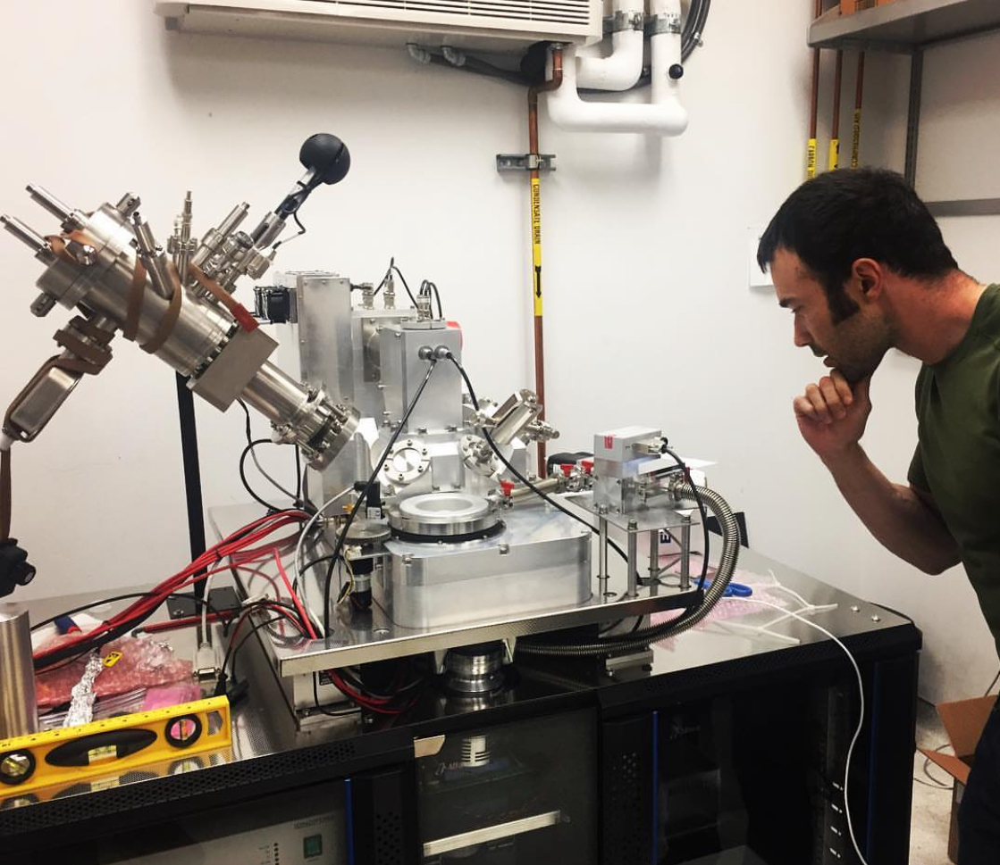

Finite and infinite-life games
Oh my god! They killed Kenny!
Stan, pretty much every episode of South Park seasons 1-5.
The older platformers vs Celeste
If you have played basic platformer games, especially if you are old enough to remember playing the 2-D (16-bit and earlier) era games, you know the general structure. You have a finite number of lives to begin with, with the opportunity of getting extra lives in the game. If you run out of lives, it's "game over" and you have to start over. You have to get through some set of challenges in each level. In select areas and/or levels, there are sub-bosses and bosses. The levels get progressively harder. The last level is particularly challenging, but still doable. Then you "beat the game."
I grew up initially playing Mario 1 and 3 on NES, then Sonic 1, 2, and 3&k on Sega Genesis, and there is a particular place in my heart for a lesser known Sega game called Rocket Knight Adventures. Each of these games had the aforementioned structure.
Now I have a PlayStation 4 (PS4), and despite all the extra compute power, I still go back to these types of games. PS4 has a collection of Sonic games that I can play when I'm feeling nostalgic. But that's not what I want to talk about today. Today I want to talk about a relatively new (2018) 2-D platformer game that has a cult following, and a different structure, called Celeste.
The biggest difference between the structure of Celeste and the structure of pretty much every other 2-D platformer I grew up with, is that you have infinite lives. Why? Because the game is incredibly difficult. As in, you die hundreds of times each level. Each level is organized as rooms (rather than a continuous scroll). When you die, you start at the beginning of the room you died in.
Below is a typical room in Celeste, taken from the Wikipedia article on the game. You start on the left and your goal is to get to the next room, presumably on the right (though I'm pretty sure there's a hidden room behind that brownish section of wall just to the right of the lower spikes). This is one of the earlier levels, but even here it's not uncommon to die over and over in a room like this. You'd simply and quickly re-spawn on the left where you started. No death theme song like Super Mario to rub it in. You just re-spawn and you're at it again, almost to the point where you barely notice that you died. (Image below is under CC BY-SA 4.0 license).
#/media/File:Celeste_screenshot_02.png){kind=link}

So the big question for me was, what's the point of playing a game where you have infinite lives? The fear of "game over" and having to start all over was a huge motivating driver for playing the game well. It turns out, upon playing it for a few days, the answer became clear at least for me: the flow state.
Infinite lives as an efficient path to the flow state
I have talked about the flow state before, but I'll give you a quick model. There is a delicate balance between our competence and whatever problem we're solving. If the problem is too hard for us, we have anxiety. If the problem is too easy for us, we have boredom. But if the problem is slightly above our competence, we experience flow, where we lose ourselves in the moment, and perform at our best. It is very satisfying. Below is an picture of this model, originally developed by psychologist Mihaly Csikszentmihalyi (picture is from the linked Wikipedia article, where each fragment is a hyperlink to the respective emotion).

The older platformer games would start out easy, but then get progressively harder. At some point, I would be at a level that was slightly above my competence, and then I would enter the flow state. If the game was too easy, I could adjust the global difficulty level in the menu at the start of the game. But the genius of the Celeste model is that in a given platforming room that is way above your general competence, with infinite lives, you slowly chisel away at each problem, and you don't have the anxiety that these difficulty levels would otherwise give you. For a problem that is way above your competence, you can rapidly iterate, trying new things, until you are just competent enough to solve it. In this way, you spend much more time in the difficulty-to-competence zone that is conducive to flow.
Of course, I'm speaking about my first person experience. Not necessarily that of others. I think for this to work, you have to be cool with the idea that you spend a ton of time repeatedly dying as you iterate. If you're cool with that, then I would say that based on the model and my experience, Celeste is a fantastic way to get into the flow state.
Infinite-life games in the real world
The other thing that I found striking about the Celestian flow state strategy is that it mirrors a lot of my favorite type of work that I do in my professional life as a computational biologist. When I'm solving a new problem where there are few if any best practices and pre-made libraries for it, I find myself in a Celeste-like situation. I can break the problem down into pieces. But each sub-piece is still very difficult, and I spend a lot of time being flat-out wrong. Either I have to de-bug something, or I find that the method I'm using doesn't quite do what I wanted it to do, or my mental model of the problem or solution itself was wrong. Like each room in Celeste, I have to chisel away at each piece. Like dying in Celeste, I'm wrong over and over again. And like Celeste, I get through what I initially thought would be impossible. And like Celeste, I'm in the flow state for just about all of it.
This is not a new thing for me. My time in grad school was very much like a game of Celeste. The Nolan Lab was full of (amazing) version 0 prototypes that we were all chiseling away at. If you were ok with whatever it is failing over and over again before you finally get it to work, be it a new laboratory machine or a new algorithm, then you could find yourself in the flow state all day and get a paper out of it in the end. Below is a picture of me standing next to a typical version 0 device at the time (MIBI, developed by a guy literally named Michael Angelo) somewhere in my second half of graduate school. In other words, the Nolan Lab was playing Celeste in spirit before Celeste came out.

What this suggests is that I should be seeking out these infinite-life games. If you vibe with this and/or have experienced what I'm talking about, then you should too. The two major benefits are that you get efficiently pushed into the flow state, and you end up doing things that you previously thought were impossible. In other words, you do good for yourself and you do good for the world.
I like this mental model because it is very empowering. It gets me to do things that are outside my competence and my comfort zone. It basically says: whatever it is, just start chiseling away at it, in such a way that you can rapidly fail (with minimal cost/damage) and iterate. If these conditions are met, then you don't have to worry about difficulty level. Want to climb Everest? Get started with a hill nearby. Assume you'll get tired and maybe not make it to the top the first few times. Want to become a painter? Go paint. Assume you'll be bad at it or a while. Want to start a business? Try selling something. Anything. Assume that you'll get the door slammed on your face (so to speak) hundreds of times before you get your first deal. I have direct experience with this last one.
For you to really understand what I'm talking about, you need to see what gameplay in Celeste looks like. If you haven't played Celeste before, go to 1 hour and 56 minutes into this video to see the rapid iteration through a challenging room. This is one minute of dying over and over again in the same room, but this can go on and on for upwards of an hour in some room.
The more difficult problems in my professional life feel like these rooms in Celeste. They feel impossible. I'm wrong over and over again. But I keep going. I keep being wrong. Then at some point, I realize that I'm pretty far along. So as a mental model for whatever you want to do, if you can turn it into something that looks like one of these Celeste rooms, you're going to do things you didn't think were possible, and you're going to have fun in the process.